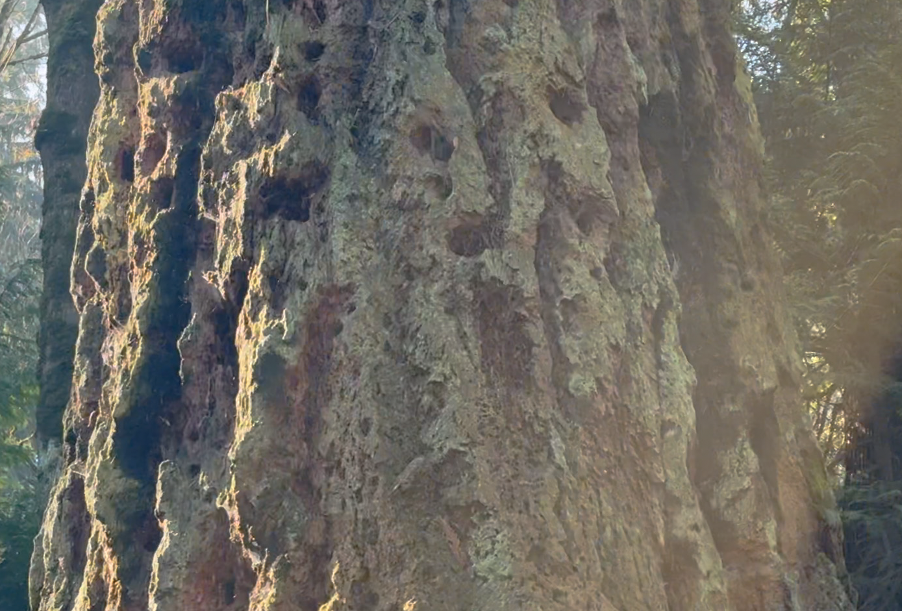

A severe fire ravaged the Puget Lowlands in 1508, burning everything to the ground here at Seward Park.
A more moderate regional fire burned here in 1701. It destroyed many species. But a cohort of 200 year-old doug firs, each with thick bark, survived. You can see burned bark on this tree, and on many others throughout the forest.

A few large cedars also survived this fire. It is likely that most of the sword ferns did too. Their woody rhizomes, nestled below ground, protected by soil.